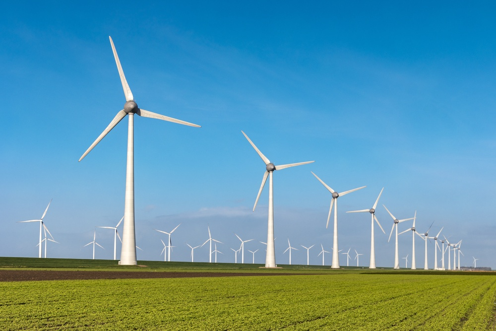

Existem diversas fontes de energia renováveis que permitem a geração limpa de energia.
Entre as mais utilizadas estão as águas dos rios e oceanos, ventos, luz do Sol, biomassa, ondas e marés e o calor proveniente da terra.
Todas elas estão disponíveis a nós de forma acessível e gratuita no planeta, em maior ou menor abundância.
Conheça um pouco mais sobre cada uma delas:
1- Energia Hidrelètrica:
Energia hidrelétrica é a eletricidade gerada da força das águas. O processo de transformação da
energia potencial da água em energia cinética e, posteriormente, elétrica ocorre no interior das usinas hidrelétricas.
A hidreletricidade é a principal forma de energia utilizada no Brasil, e a terceira no mundo. Embora se
utilize de uma fonte renovável e seja considerada mais limpa e barata comparativamente às demais, a construção
das hidrelétricas é responsável por uma série de impactos ambientais e sociais que podem transformar os ecossistemas
locais bem como a vida das populações que vivem nas suas proximidades.
2- Energia Eólica:
A energia eólica é aquela obtida a partir da força do vento.
O processo de extração é realizado principalmente graças ao rotor
(que transforma a energia cinética em energia mecânica)
e ao gerador (que transforma dita energia mecânica em elétrica).

3- Energia Geotérmica:
A energia geotérmica é um tipo de energia renovável
obtida a partir do calor proveniente do interior da Terra.
O processo de aproveitamento dessa energia é feito por meio
de grandes perfurações no solo, já que o calor do nosso
planeta está localizado abaixo da superfície da Terra.
4- Energia Solar:
Energia solar é uma fonte alternativa, renovável e sustentável
de energia que provém da radiação eletromagnética (luz e calor) emanada
diariamente pelo sol. Essa energia pode ser utilizada por diferentes tecnologias,
como aquecedores solares, painéis
fotovoltaicos e usinas heliotérmicas (ou termossolares).
5- Energia Maremotriz:
A força das ondas e marés possui grande potencial e também já é utilizada para a geração elétrica.
Grandes torres subaquáticas instaladas próximas ao litoral utilizam hélices e diversas
outras tecnologias para captar a força da água e transformá-la em eletricidade.
6- Biomassa:
É a geração através da queima de materiais orgânicos,
como o bagaço da cana-de-açúcar, mais comum no Brasil.7
Ou ainda o álcool, madeira, palha de arroz, óleos vegetais, entre outros.
Embora a queima desses materiais libere gases poluentes na atmosfera, ela
é considerada uma forma limpa de geração devido ao fato
de que essa quantidade de CO2 é absorvida no cultivo desses materiais, zerando
os impactos ambientais.